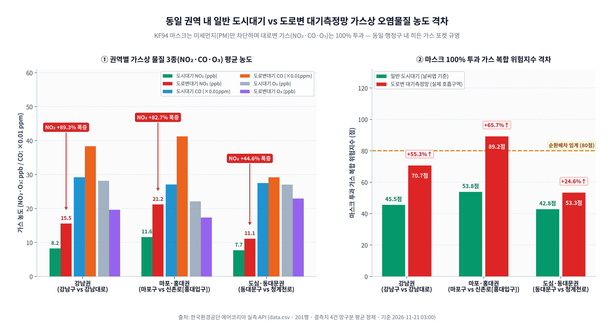

내 배달 동선 매연 구간 & 맑은 콜 지도
동네 공기와 큰길 매연 차이, 가까운 라이더 쉼터 위치를 한눈에 확인하세요
동네 (날씨앱 기준)
큰길 매연 (마스크 통과)
라이더 쉼터 (-18점)
큰길 배달
지연 0분 맑은 순환길
지도를 클릭하거나 🛵를 끌어 원하는 위치를 확인해 보세요
KF94 마스크는 미세먼지만 막고 배기가스는 못 막아요. 피로도가 80점 넘기 전에 맑은 동네 콜로 바꿔드릴게요.
동네 공기와 큰길 매연 차이, 가까운 라이더 쉼터 위치를 한눈에 확인하세요
수집·정제한 data.csv를 analysis.R 및 generate_charts.py로 시각화했습니다 (클릭 시 확대).


data.csv)에어코리아 API 실측 및 결측치('-') 망구분 평균 Imputation 완료 데이터
| 측정일시 | 측정소명 | 망구분 | PM10 (㎍/㎥) | PM2.5 (㎍/㎥) | O₃ (ppm) | NO₂ (ppm) | CO (ppm) | 가스 위험지수 |
|---|---|---|---|---|---|---|---|---|
| 데이터를 불러오는 중입니다... | ||||||||
배민·쿠팡이츠 등에 실시간 도로변 가스 위험도·순환 콜 매칭 API를 월 구독료로 공급해 플랫폼의 의무 산재보험료와 호흡기·졸음사고 비용을 절감합니다.
순환 배차와 안전 권역 주행을 준수한 라이더에게 보험료 4.5%를 즉시 할인하고, 보험사의 사고 손해율 감소에 따른 제휴 수수료를 수취합니다.
가스 누적 위험 임계치에 도달한 라이더를 지자체 이동노동자 쉼터로 자동 연계하고, 지자체 스마트 노동 안전 관제 시스템 구축 예산으로 납품합니다.